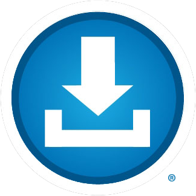

Blue Button Toolkit

A Kit for Organizations to Support Consumers in Getting & Using Their Health Records
A Kit for Organizations to Support Consumers in Getting & Using Their Health Records
Blue Button is a nationally recognized symbol indicating to consumers that they can get their own health records electronically from doctors, hospitals, and other health care providers, such as pharmacies and health insurance plans. With electronic access to their health records, consumers can check them for accuracy and completeness, share them with people they trust—in case of emergency or to coordinate care among different providers—and reference them as needed. Health records may include clinical information from doctors and hospitals, health insurance claims, prescription histories, and lab/diagnostic test results.
The Blue Button Initiative is a public-private partnership to empower consumers with easy and secure access to their health records from a variety of sources in a format they can use. More than 500 companies have pledged their support to increase consumer access to and use of their health data and as a result, more than 150 million Americans are already able to access their health information online from a variety of sources. The Blue Button Initiative is supported by a growing portfolio of national standards that support individual consumers in using tools developed by the private sector, including applications and services that help individuals to analyze data and make better use of it to manage their health.
The Blue Button Toolkit is a set of resources for organizations that are working to make it easier for consumers to get and use their health records electronically. Target organizations include hospitals and doctors’ offices, health plans, pharmacies, labs, Electronic Health Record vendors, consumer app developers, and consumer and patient advocacy organizations.
The toolkit is organized according to what an organization is trying to do. It includes a set of recommended technical standards, guidelines and approaches for sharing electronic health information with consumers in a structured way that allows patients to get their own health data and stimulates the development of applications and services by entrepreneurs to help patients upload their information to make better use of it. The kit also includes marketing materials to help organizations communicate the value of Blue Button to consumers.
The information in the toolkit can help organizations’ leadership to understand the Blue Button Initiative, and why they should participate. Other resources, including technical guidance and marketing materials, should be shared with appropriate experts in each area. For example, an individual provider with his or her own practice may wish to share this toolkit with their Electronic Health Records (EHR) vendor as part of a conversation about implementing or enabling features such as the “view online, download and transmit” requirement in Stage 2 Meaningful Use in a way that supports patient and family engagement with their health data.
In short, to be part of an initiative to provide every American with secure, electronic access to their vital health information so they can use it to stay healthy or achieve better health outcomes.
Increasingly consumers expect easy electronic access to a wide variety of goods and services. From checking the weather to managing finances, most Americans are able to access and analyze information in real time to support informed decision-making. Healthcare is different since much of our vital health information is locked away in filing cabinets or electronic health records (EHRs). Although 90% of Americans believe they should be able to access their own health information online, and 2 out of 3 are willing to switch healthcare providers to one who provides online access, most healthcare providers don’t yet offer such access, or require consumers to log into their proprietary portal to get it. How do we get consumers their health information so they can manage their health the way they manage other aspects of their lives? Widespread electronic access to health records from multiple sources by consumers, compelling tools that make the content of the records useful, and a shift in public awareness and attitudes regarding the role of the consumer or patient.
To achieve these ends, the Blue Button Initiative is catalyzing consumer access to their own electronic health data in a consistent way, using a defined set of national technical standards and a shared symbol: the Blue Button logo.
The use of consistent technical standards by “data holders” (such as hospitals, provider offices, pharmacies, and health plans) for sharing health data with consumers is important because it makes it easier for technology developers to build tools when they can predict what types of data they will receive and how it will be transmitted. Consistent standards also make it easier for consumers to transfer health records from one source (such as a pharmacy), to another (such as their primary doctor). The Blue Button recommended technical standards also satisfy the requirements for Stage 2 of Meaningful Use with regard to enabling patients to view, download, and transmit their health information, and support the information sharing necessary for the success of Patient Centered Medical Homes, Accountable Care Organizations, and other emerging payment reform initiatives.
The use of consistent Blue Button branding by organizations that support consumer engagement likewise offers advantages: digital access to their own health records is a relatively new concept for most consumers, so they are not inclined to expect it or ask for it, particularly given the traditionally paternalistic culture of healthcare. Just like the EnergyStar symbol that signifies energy efficiency on products as diverse as dishwashers and light bulbs, Blue Button universally stands for electronic access to health information for consumers, whether it’s from a healthcare provider, hospital, pharmacy or a health insurance plan. With consistent usage of the Blue Button symbol by the federal government and the private sector, more and more Americans are associating it with getting access to their health information.
For a company or consumer organization, use of the Blue Button logo conveys to your customers or members that you encourage them to be partners in their health through access to and use of their health information, and that you are forward thinking, customer-oriented, and tech savvy. It also signals that your efforts are part of a larger initiative to enable every American with secure access to their vital health information so they can have it available when and where they need it.
In 2010, the US Department of Veterans Affairs (VA) and the Department of Defense (DoD) first used the Blue Button symbol on their patient portal to give veterans and members of the military the ability to download their health records. In 2012 the US Department of Health and Human Services’ Office of the National Coordinator for Health Information Technology (ONC) took over responsibility for leading the expansion and evolution of the Blue Button Initiative beyond the VA to other federal agencies and the private sector. ONC, in collaboration with the White House, VA, DoD, CMS and hundreds of private sector volunteers has since evolved the recommended standards that support the Blue Button Initiative, refined public messaging related to the brand, and greatly expanded the number of participating organizations. Today, more than 500 companies in the private sector have pledged their support for Blue Button and more than 150 million Americans are able to access their digital health information from at least one source.
The Blue Button Initiative is a public-private partnership based out of the Office of the National Coordinator for Health Information Technology at the US Department of Health & Human Services (ONC) with strong support from other federal agencies, including the White House, VA, CMS, DoD, IHS and the private sector. Watch Todd Park, Chief Technology Officer of the U.S. explain the significance of Blue Button
More than 500 private sector organizations participate in the Blue Button Pledge Program, including Aetna, United, Walgreens, CVS, Quest, Microsoft, the Mayo Clinic, AARP and the American Cancer Society. For a full list of participating members, please see www.healthit.gov/pledge. You can also see how far along specific organizations are with respect to enabling electronic access to their health data via the Blue Button Connector website at http://bluebuttonconnector.healthit.gov. Although many healthcare providers do not yet offer such access, the majority of Americans have electronic access to their own health records electronically via one or more organizations listed on the Blue Button Connector, including health plans and pharmacies.
Blue Button is not a specific tool or database–it is a nationally recognized symbol indicating to consumers that they can get their own health records electronically from doctors, hospitals, and other health care providers, such as pharmacies and health insurance plans. The Blue Button Initiative provides guidance and tools to support the private and secure access to and use of health information by consumers, but participating organizations and consumers themselves each have a role to play in protecting privacy.
The HIPAA Privacy Rule protects health information that is kept by health care providers, health plans and other institutions. When a consumer obtains a copy of his or her health information it’s up to the individual to keep his or her own information safe.
Organizations that offer consumers access to their own health records are responsible for authenticating consumers (proving they are who they claim to be), and do so in a variety of ways. When it comes to transmitting health data via secure email or other methods, the Blue Button Initiative recommends specific technical transport methods, each of which has security safeguards associated with it.
In addition, the Blue Button Initiative supports transparency in the privacy practices of apps and tools intended for consumers in order to help them make informed choices. The Blue Button Initiative encourages developers to use tools such as the Model Privacy Notice for personal health records (PHRs) which helps consumers understand how companies safeguard their health data.
In 2013 the Office of the National Coordinator for Health Information Technology (ONC) issued the Blue Button+ Implementation Guide to support data holders/providers and third party applications in implementing Blue Button standards. This Blue Button Toolkit is the evolution of that original implementation guide, but with a few significant changes: